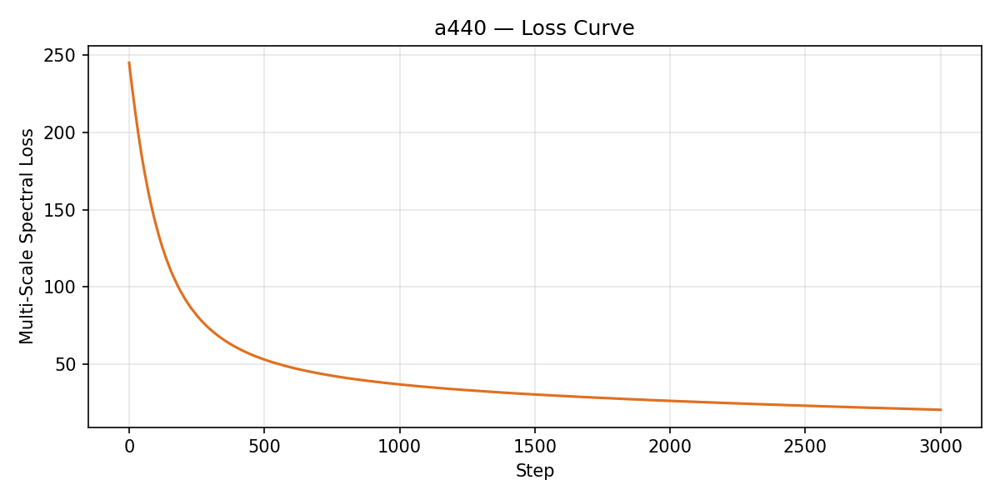
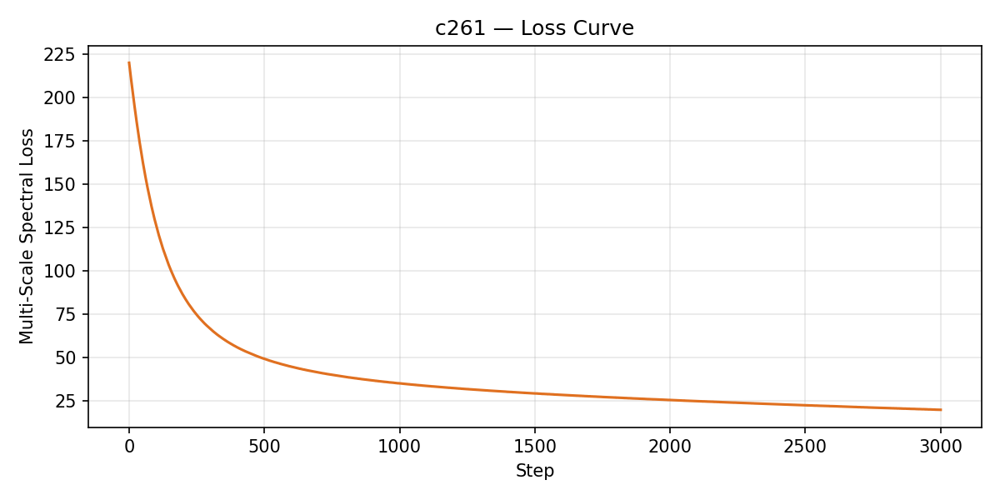
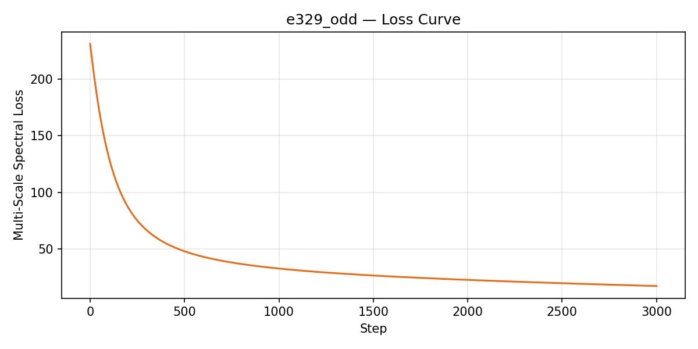

A minimal differentiable synthesizer in PyTorch (trying to understand the paper)
music-ai-reading-groupMost generative models for audio operate directly on waveform samples (so raw audio) or frequency-domain representations (think fourier-transform), and while these approaches are general enough to express any signal, they do not leverage existing knowledge of how sound is produced and perceived so you end up having to learn physics from scratch. Differentiable Digital Signal Processing (DDSP), introduced by Engel et al. (2020), takes a different approach where they integrate classic signal processing components (e.g., oscillators, filters, reverb) into automatic differentiation frameworks, allowing gradients to flow from the audio output back through the entire synthesis pipeline (so we can backpropagate through the signal processing components, yay!).
Most of what you'll find in DDSP comes from inductive bias in practice. Rather than asking a neural network to learn the physics of sound generation from scratch, DDSP encodes that structure directly into the model architecture, and the network need only learn to control it (thus the inductive bias bit). This page accompanies our reading group session on Engel et al. (2020), where we walked through the paper's core ideas and built a minimal DDSP synthesizer from scratch in PyTorch to help ground our understanding. Below, we present interactive visualizations of the key concepts, audio examples at various stages of training, and resources for further reading. Hope this is helpful for everyone :D
A bank of sinusoids at integer multiples of f0.
Phase is accumulated via cumulative sum, which
keeps oscillators continuous when frequency
changes (i.e., the oscillator adjusts its speed
from its current position rather than jumping).
Implemented as cumsum +
sin (PyTorch land).
White noise shaped by a learned, time-varying filter (i.e., a per-frame EQ curve). We FFT each noise frame, multiply by the predicted filter magnitudes, and IFFT back. This captures the stochastic components of sound (e.g., bow noise, breath) that sinusoidal harmonics cannot easily represent.
We compare magnitude spectrograms, not raw waveforms, at six FFT sizes (64 to 2048). The linear term penalizes errors in loud components while the log term catches subtle, perceptually salient details. In a production analogy, this is akin to checking your mix on six different monitoring systems, kinda :)
The oscillator bank encodes the physics of sound production (e.g., harmonic structure, phase coherence) that a neural network would otherwise need to learn from data. We found while going through that this is the paper's most salient contribution: DDSP models achieve high-fidelity synthesis at roughly 300x fewer parameters than WaveNet.
A challenge in oscillator design is maintaining phase
continuity when frequency changes. The naive approach,
computing phase as 2π · f · t,
produces a discontinuity (an audible click...you'll
literally hear it) because the phase value jumps when f
changes. Phase accumulation resolves this by maintaining a
running sum of frequency-dependent increments, allowing the
oscillator to adjust its rate of oscillation from its
current position. An analogy here could be to a turntable:
changing the platter speed does not move the needle but it
changes how fast the groove passes beneath it. Click the
button below to trigger a frequency change and observe the
difference (hopefully it works :) ).
In the Harmonic plus Noise model (Serra and Smith, 1990), all harmonic frequencies are constrained to be integer multiples of a fundamental frequency f0. This means that a single parameter controls the position of every harmonic in the spectrum, and the relative amplitudes c_k (bar heights) determine the timbre independently of pitch. Drag the slider to observe how adjusting f0 moves all harmonics in lockstep, illustrating why the neural network can control pitch and timbre as separate, interpretable dimensions.
Natural sounds contain both harmonic and stochastic components (e.g., the breathy quality of a flute, the scrape of a bow on a string). The filtered noise synthesizer addresses the latter by starting with white noise, which has equal energy at all frequencies (we assume Gaussian at this point), and shaping it through a learned, time-varying filter. In practice, the neural network predicts filter magnitudes H_l for each frame, and we apply them via pointwise multiplication in the frequency domain, which is equivalent to time-domain convolution but at a significantly lower computational cost. Drag the control points below to sculpt the noise spectrum and observe how the filter shapes the output.
Given that every operation in our synthesizer is
differentiable (i.e., cumsum, sin,
fft, pointwise multiplication), gradients can
flow from the multi-scale spectral loss all the way back to
the synthesis parameters. In the visualization below, we
simulate this optimization process: the predicted waveform
(orange) begins with random harmonic amplitudes and
progressively converges toward the target (teal) as the loss
decreases. In the real DDSP pipeline, a neural
encoder-decoder predicts these parameters from audio, but
the principle of gradient flow through the synthesizer
remains the same. Maybe we'll get to this in the future.
In each experiment below, we provide f0 as ground truth,
mirroring the real DDSP pipeline where a pre-trained pitch
tracker (CREPE; Kim et al., 2018) extracts fundamental frequency from the audio. We found
through experimentation that optimizing f0 directly through
sin(cumsum(...)) produces a highly non-convex
loss landscape, which may explain the paper's design choice
to condition on extracted pitch rather than learning it
end-to-end. The optimizer learns only harmonic amplitudes
and noise filter parameters. Click any cell to play, and
listen to how the reconstruction improves over training
steps.
Target: a 440 Hz fundamental with 2nd and 3rd harmonics at relative amplitudes of 1.0, 0.5, and 0.25, producing a simple instrument-like timbre.

Target: 261.63 Hz (middle C) with six harmonics of decreasing amplitude. The richer harmonic content presents a more challenging optimization landscape for the synthesizer.

Target: 329.63 Hz with only odd-numbered harmonics (1st, 3rd, 5th, 7th), with even harmonics zeroed out. This produces the characteristically hollow timbre associated with closed-pipe resonators (e.g., clarinet).
